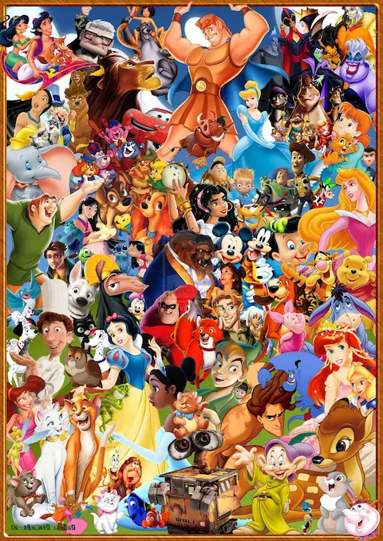

Le parole chiave per la tua vacanza a Walt Disney World - parte seconda
By Valentina
22 Febbraio 2021
Eccoci alla seconda parte delle parole chiave da conoscere assolutamente prima di andare a Disney World. Se vi siete persi la prima parte, la trovate qui.
IP (pronucia: AI-PI)

IP è l’acronimo di “Intellectual Property”, letteralmente proprietà intellettuale, in questo caso specifico della Disney. Questo è il nome che gli americani usano per i personaggi dei film Disney (e Marvel, Star Wars ecc).
Per esempio, parlando di EPCOT, non è raro sentire fans lamentarsi per l’introduzione di troppi IP nel parco (si parla di Frozen in Norvegia, della nuova esperienza di Oceania in arrivo, ecc…).
Se ascoltate il mio podcast, sono sicura che vi sará capitato di sentire questo acronimo almeno una volta!
Extra Magic Hours Early Theme Park Entry
Le Extra Magic Hours erano le ore mattutine in cui i parchi erano aperti solamente per gli ospiti dei Resort Disney. Questo era uno dei vantaggi dello alloggiare in proprietà e dava diritto ad entrare in diversi parchi, in giorni specifici della settimana (la Disney pubblicava un calendario con le Extra Magic Hours), un’ora prima di tutti gli altri. Nel 2021, è stato annunciato che le Extra Magic Hours non esistono più, ma un concetto simile è stato introdotto: la Early Theme Park Entry. Anche questo è un vantaggio riservato agli ospiti degli Hotel Disney, ma ora l’entrata ai parchi sarà possibile tutti i giorni, per qualsiasi parco, ma limitata a 30 minuti di anticipo rispetto agli altri ospiti. Se volete leggere di più su questo, e tanti altri cambiamenti introdotti nel 2021, date un’occhiata a questo articolo.
Rope Drop
Questa è una delle strategie più importanti per gustare appieno le attrazioni nei parchi Disney, durante la vostra vacanza! Ecco il segreto: i parchi di Disney World aprono sempre qualche minuto (20-30) prima dell'apertura ufficiale. In quel lasso di tempo, è possibile entrare fisicamente nei parchi e iniziare ad andare verso la prima attrazione prescelta per la giornata. Molto spesso, in uno dei sentieri o delle aree che portano verso l'attrazione, si incontreranno dei cast members che (a volte) sorreggono una corda. All'ora esatta dell'apertura del parco, questi cast member faranno cadere la corda si potrà raggiungere l'attrazione con un vantaggio notevole rispetto a chi è ancora all’ingresso dei parchi. Da qui il nome "rope-drop", letteralmente: caduta della corda. Di recente, molto meno poeticamente, i cast members fanno semplicemente muro tra di loro per bloccare i sentieri che portano alle attrazioni: non c'è nessuna corda, ma il nome è rimasto lo stesso!
Se vi siete persi la prima parte di questo articolo, la trovate qui.
Continua a seguirmi, ci sono tantissime altre parole da conoscere!
Se quest’articolo è stato interessante, non dimenticarti di seguirci sul podcast “Aperitivo a Main Street, U.S.A.”, disponibile su Spotify, Anchor e tutte le altre maggiori piattaforme audio!